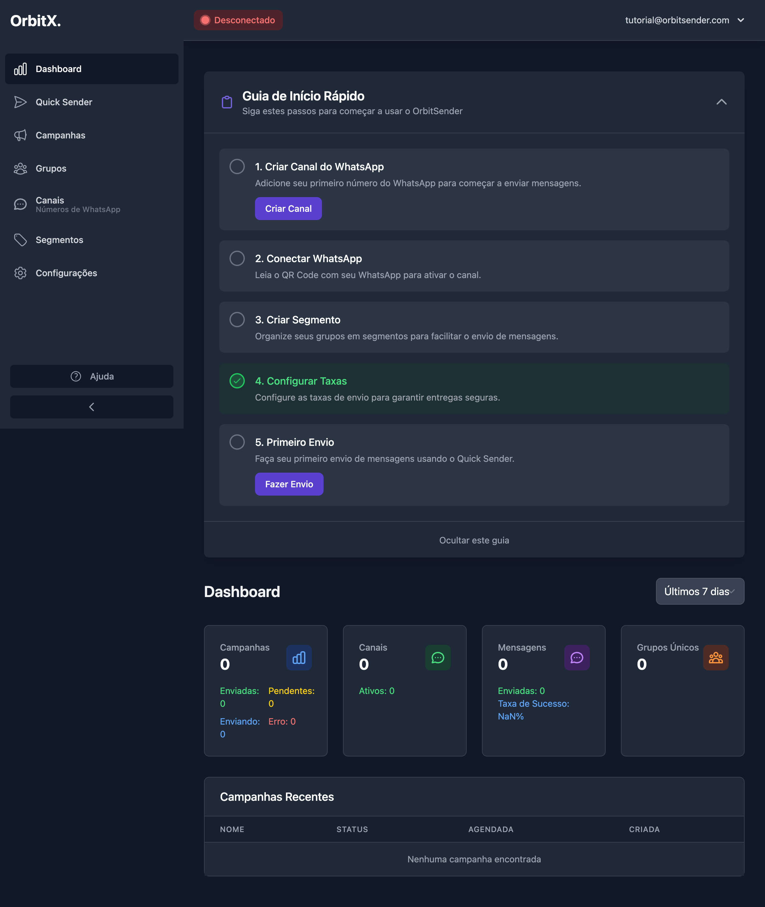
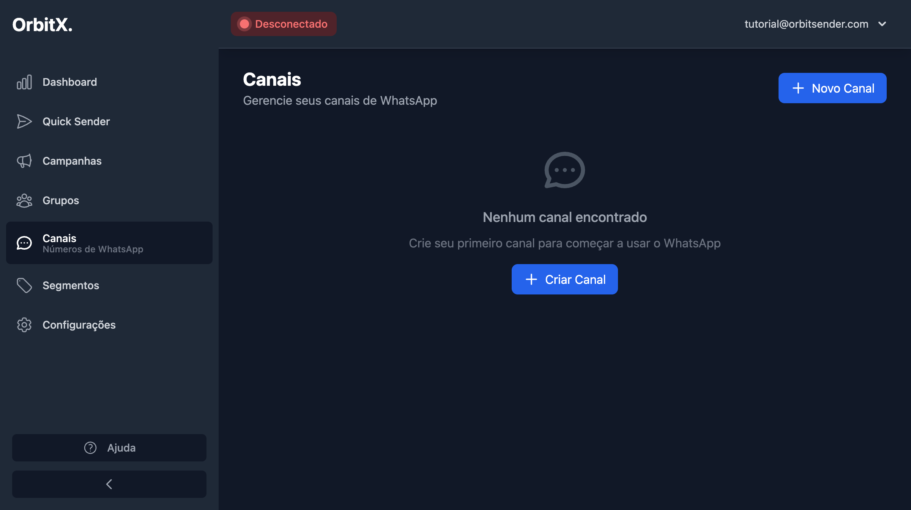
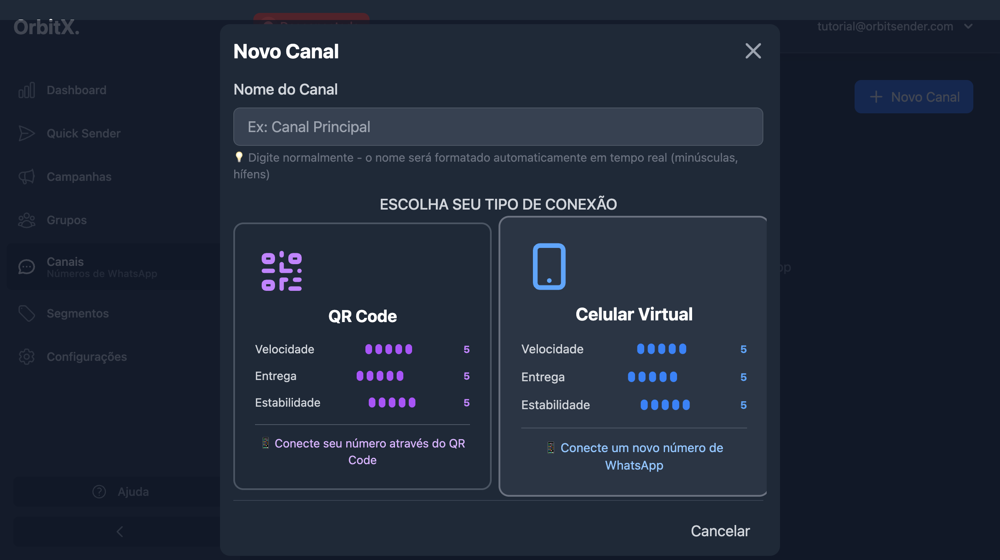
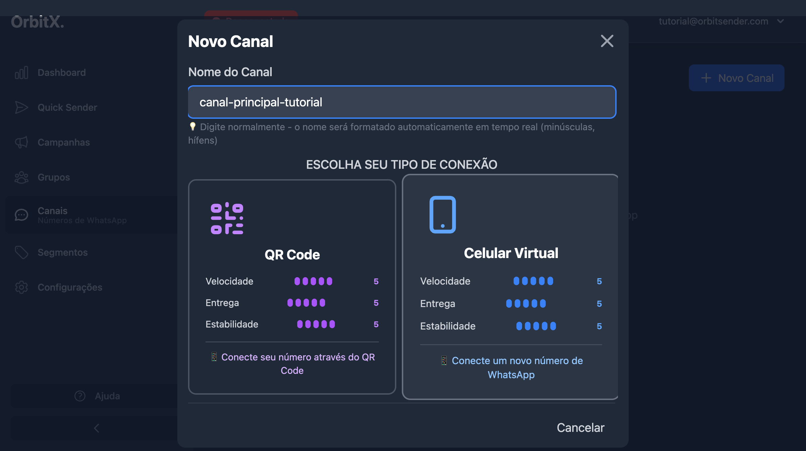
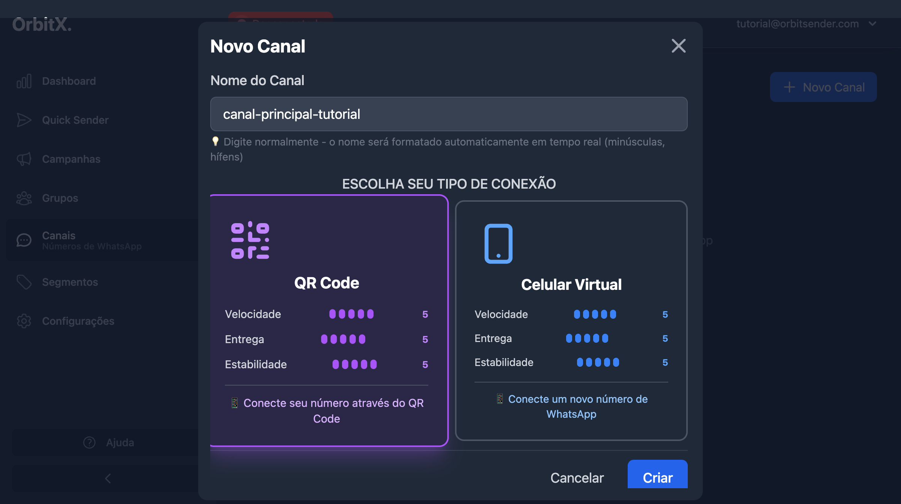
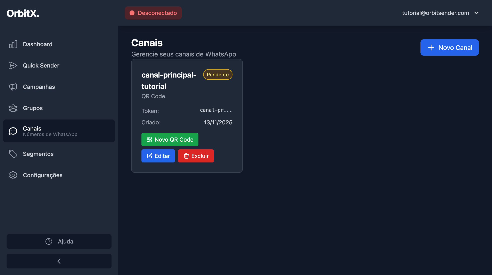
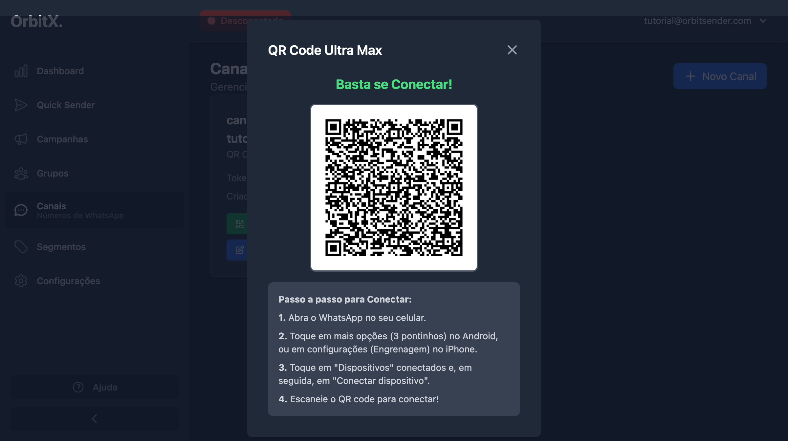
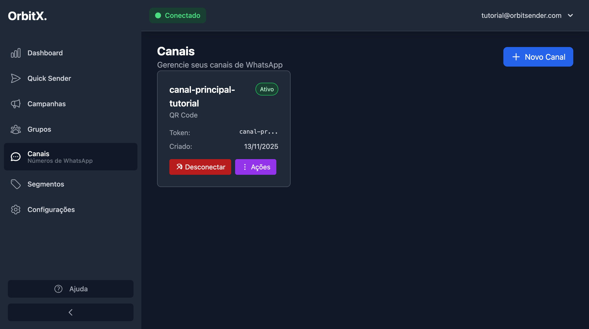

📱 Conexão de Canais do WhatsApp
Tutorial completo passo a passo para criar e conectar seu primeiro canal via QR Code
📚 Páginas Relacionadas
O que são Canais?
Canais são seus números de WhatsApp conectados ao sistema OrbitSender. Cada canal representa um número que você usará para fazer disparos de mensagens para grupos do WhatsApp.
- Você pode conectar múltiplos números (canais) ao mesmo tempo
- Cada canal pode enviar mensagens independentemente
- Se você conectar múltiplos canais ao mesmo segmento, eles dividirão os grupos automaticamente
- O número usado para conexão deve ser diferente do número cadastrado no seu perfil (usado apenas para contato do suporte)
- Recomendamos usar o computador para criar e conectar o canal pela primeira vez
Passo 1: Acessar o Dashboard
Após fazer login no sistema, você será direcionado para o Dashboard.
Você também pode acessar diretamente em: https://app.orbitsender.com/dashboard

O que você verá no Dashboard:
- Guia de Início Rápido: Um card no topo com os primeiros passos
- Menu Lateral: Com todas as seções do sistema
- Estatísticas: Campanhas, Canais, Mensagens e Grupos (tudo zerado inicialmente)
- Status de Conexão: No topo direito, mostrando "Desconectado" (até conectar um canal)
Se você ver o guia de início rápido, ele te direcionará diretamente para criar um canal. Você pode seguir o guia ou acessar manualmente pelo menu lateral clicando em "Canais".
Passo 2: Acessar a Seção de Canais
Para criar e gerenciar seus canais, siga estes passos:
2.1 Navegar até Canais
- No menu lateral, localize a opção "Canais" ou "Canais - Números de WhatsApp" e clique nela
- Ou acesse diretamente em:
https://app.orbitsender.com/channels - Você será direcionado para a página de gerenciamento de canais

2.2 Tela Inicial de Canais
Na primeira vez, você verá uma tela vazia com:
- Mensagem: "Nenhum canal encontrado"
- Botão "Criar Canal" no centro
- Botão "Novo Canal" no canto superior direito
Você pode clicar em qualquer um dos botões para começar a criar um canal. O resultado será o mesmo - abrir o modal de criação.
Passo 3: Criar um Novo Canal
Vamos criar seu primeiro canal passo a passo:
3.1 Abrir o Modal de Criação
- Clique no botão "Criar Canal" ou "Novo Canal"
- Um modal será aberto na tela

3.2 Preencher o Nome do Canal
- No campo "Nome do Canal", digite um nome descritivo
- Exemplos:
Canal Principal,iPhone 15,Samsung,WhatsApp Empresarial - O sistema formatará automaticamente o nome (removendo espaços e convertendo para minúsculas com hífens)
O sistema formata automaticamente o nome do canal. Por exemplo:
- Se você digitar:
Canal Principal Tutorial - Será formatado para:
canal-principal-tutorial

3.3 Escolher o Tipo de Conexão
Você verá duas opções de conexão:

Opção 1: QR Code (Recomendado para começar)
- Velocidade: ⭐⭐⭐⭐⭐ (5/5)
- Entrega: ⭐⭐⭐⭐⭐ (5/5)
- Estabilidade: ⭐⭐⭐⭐⭐ (5/5)
- Descrição: 📱 Conecte seu número através do QR Code
Opção 2: Celular Virtual
- Velocidade: ⭐⭐⭐⭐⭐ (5/5)
- Entrega: ⭐⭐⭐⭐⭐ (5/5)
- Estabilidade: ⭐⭐⭐⭐⭐ (5/5)
- Descrição: 📱 Conecte um novo número de WhatsApp
- Clique na opção "QR Code"
- Esta opção será destacada (selecionada)
- O botão "Criar" será habilitado
3.4 Finalizar a Criação
- Após preencher o nome e selecionar o tipo de conexão (QR Code), clique no botão "Criar"
- Aguarde alguns segundos enquanto o canal é criado
- O modal será fechado e você verá o canal criado na lista

Após criar, você verá:
- Nome do canal (formatado)
- Tipo de conexão (QR Code)
- Status: "Pendente" (ainda não conectado)
- Token do canal
- Data de criação
- Botões de ação: "Novo QR Code", "Editar", "Excluir"
Passo 4: Gerar e Escanear o QR Code
Agora vamos conectar seu WhatsApp ao canal criado:
4.1 Gerar o QR Code
- No card do canal criado, localize o botão "Novo QR Code"
- Clique neste botão
- Um modal será aberto com o QR Code
- Aguarde alguns segundos enquanto o QR Code é gerado (você verá "Gerando QR Code...")

O QR Code pode levar alguns segundos para ser gerado. Se aparecer "Gerando QR Code...", aguarde alguns instantes. Não feche o modal.
4.2 Instruções de Conexão
O modal mostrará um QR Code grande e as seguintes instruções:
📱 Passo a Passo para Conectar:
- 1. Abra o WhatsApp no seu celular.
- 2. Toque em mais opções (3 pontinhos) no Android, ou em configurações (Engrenagem) no iPhone.
- 3. Toque em "Dispositivos" conectados e, em seguida, em "Conectar dispositivo".
- 4. Escaneie o QR code para conectar!
4.3 Escanear o QR Code com o WhatsApp
- No seu celular:
- Abra o aplicativo WhatsApp
- No Android: Toque nos 3 pontinhos (⋮) no canto superior direito
- No iPhone: Toque no ícone de Configurações (⚙️) no canto inferior direito
- Navegar até "Dispositivos conectados":
- Toque em "Dispositivos conectados" ou "Aparelhos conectados"
- Iniciar a conexão:
- Toque em "Conectar um aparelho" ou "Conectar dispositivo"
- A câmera do seu celular será ativada
- Escanear o QR Code:
- Posicione o celular de forma que o QR Code na tela do computador fique visível pela câmera
- Aguarde o WhatsApp ler o código
- Você receberá uma confirmação no celular
Quando conectado com sucesso:
- O status do canal mudará de "Pendente" para "Ativo"
- O indicador no topo direito da tela mudará de "Desconectado" para "Conectado"
- Você verá informações sobre o número conectado no card do canal
- O modal do QR Code pode ser fechado (o canal já está conectado)
4.4 Como Fica o Canal Após Conectado
Após escanear o QR Code com sucesso, o canal ficará ativo. Veja como ele aparece na lista:

O que você verá:
- Status no Card: O status do canal mostrará "Ativo" (em verde) ao invés de "Pendente"
- Indicador no Topo: No canto superior direito da tela, você verá "Conectado" ao invés de "Desconectado"
- Nome do Canal: Continua mostrando o nome que você definiu (ex: "canal-principal-tutorial")
- Tipo de Conexão: Mostra "QR Code" como método de conexão
- Informações do Canal:
- Token do canal
- Data de criação
- Botões de Ação:
- "Desconectar" - Para desconectar o canal manualmente
- "Ações" - Menu com opções adicionais (Editar, Excluir, etc.)
Agora que seu canal está Ativo e Conectado, você já pode:
- ✓ Criar segmentos e adicionar grupos (veja Criação de Segmentos)
- ✓ Fazer disparos usando o Quick Sender (veja Quick Sender)
- ✓ Configurar as taxas de envio (veja Configurações)
Status dos Canais
Entenda os diferentes status que um canal pode ter:
🟢 Ativo
Canal conectado e pronto para usar. Você pode fazer disparos normalmente.
🟡 Pendente
Aguardando conexão via QR Code. O canal foi criado mas ainda não foi conectado ao WhatsApp.
🔴 Inativo
Canal desconectado ou com problemas. Clique em "Novo QR Code" para reconectar.
🔵 Sincronizando
O canal está se conectando ou atualizando informações. Aguarde alguns instantes.
Problemas Comuns e Soluções
❌ QR Code não está sendo lido pelo WhatsApp
- Feche completamente o aplicativo WhatsApp no celular
- Abra o WhatsApp novamente
- Feche o modal do QR Code no sistema (clique no X no canto superior direito)
- Clique em "Novo QR Code" novamente no card do canal
- Aguarde o QR Code ser gerado novamente
- Tente escanear novamente seguindo as instruções
❌ Mensagem "Não sincroniza" ou "Sem internet" no WhatsApp
- Reinicie o celular completamente (desligue e ligue novamente)
- Certifique-se de que o WhatsApp está atualizado na loja de aplicativos
- Feche e abra o modal do QR Code no sistema
- Gere um novo QR Code (clique em "Novo QR Code")
- Se o problema persistir, tente usar outro dispositivo para escanear
- Como último recurso, crie um novo canal com nome diferente
Importante: Este tipo de erro geralmente é um bug temporário do WhatsApp, não do sistema OrbitSender. Aguarde alguns minutos e tente novamente.
❌ QR Code apareceu e sumiu rapidamente
- Recarregue a página do sistema (F5 ou Ctrl+R)
- Clique novamente em "Novo QR Code"
- Se persistir, crie um novo canal com nome diferente
- Certifique-se de que você tem uma conexão estável com a internet
❌ Botão "Criar" não aparece ou está desabilitado
- Nome do canal vazio: Preencha o campo "Nome do Canal"
- Tipo de conexão não selecionado: Clique em uma das opções (QR Code ou Celular Virtual)
- Está no celular: Desça a página para encontrar o botão, ou acesse pelo computador (recomendado)
Desconexão e Reconexão
Se seu canal desconectar (status mudar para "Inativo"), siga estes passos para reconectar:
Por medidas de segurança durante os testes, as conexões podem ser desconectadas automaticamente após um período. Se isso acontecer, não se preocupe - é normal e fácil de resolver.
Como Reconectar:
- Acesse a página de Canais (
https://app.orbitsender.com/channels) - Localize o canal desconectado na lista
- Clique no botão "Novo QR Code"
- Siga o mesmo processo de escanear o QR Code novamente
- Aguarde o status mudar para "Ativo"
Você pode usar o mesmo número do WhatsApp para reconectar. Não é necessário criar um novo canal.
Múltiplos Canais
Você pode conectar vários números ao mesmo tempo para aumentar a capacidade de disparo:
Como Criar Múltiplos Canais:
- Crie um novo canal para cada número (siga o mesmo processo)
- Dê nomes diferentes para cada canal para facilitar a identificação
- Conecte cada um via QR Code separadamente
- Todos aparecerão na lista de canais
Vantagens de Usar Múltiplos Canais:
- Maior velocidade: Mais canais = mais mensagens enviadas simultaneamente
- Distribuição automática: Quando você usa múltiplos canais no mesmo segmento, o sistema distribui os grupos de forma igualitária entre eles
- Redundância: Se um canal desconectar, os outros continuam funcionando
- Flexibilidade: Você pode usar canais diferentes para diferentes tipos de mensagens ou segmentos
Cada canal deve usar um número de WhatsApp diferente. Você não pode conectar o mesmo número em múltiplos canais simultaneamente.
Resumo do Processo Completo
Fazer Login
Entre no sistema com suas credenciais
Acessar Canais
No menu lateral, clique em "Canais" ou acesse diretamente: https://app.orbitsender.com/channels
Criar Canal
Clique em "Novo Canal" ou "Criar Canal"
Preencher Nome
Digite um nome descritivo para o canal
Selecionar QR Code
Escolha a opção "QR Code" como tipo de conexão
Criar Canal
Clique no botão "Criar"
Gerar QR Code
Clique em "Novo QR Code" no canal criado
Escanear QR Code
Use o WhatsApp do celular para escanear o código
Confirmar Conexão
Aguarde o status mudar para "Ativo"
Próximos Passos
Após conectar seu canal com sucesso, você está pronto para: